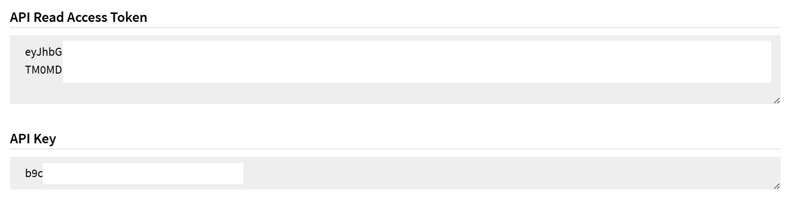
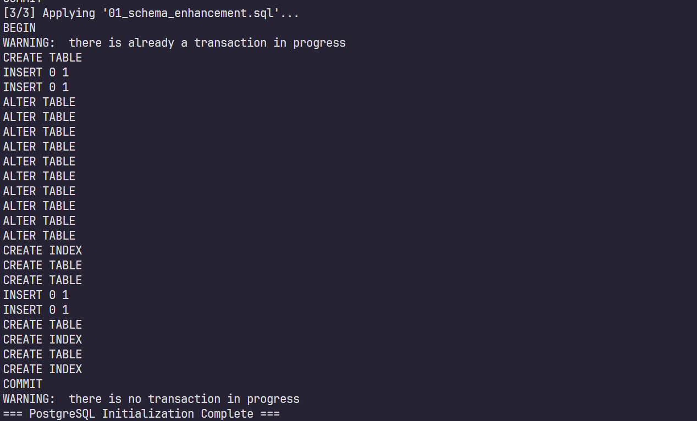
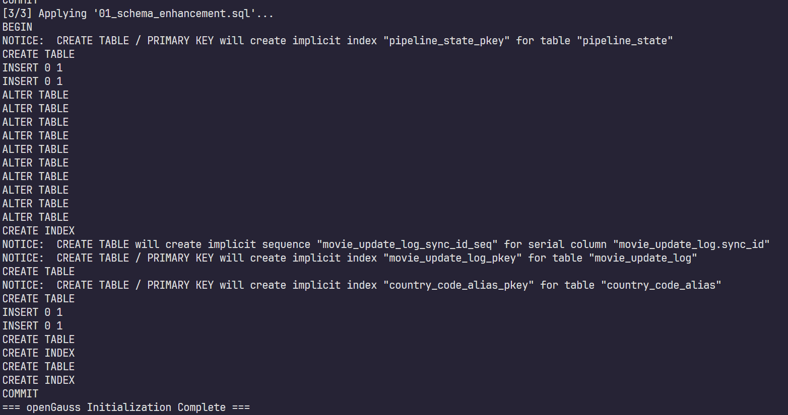
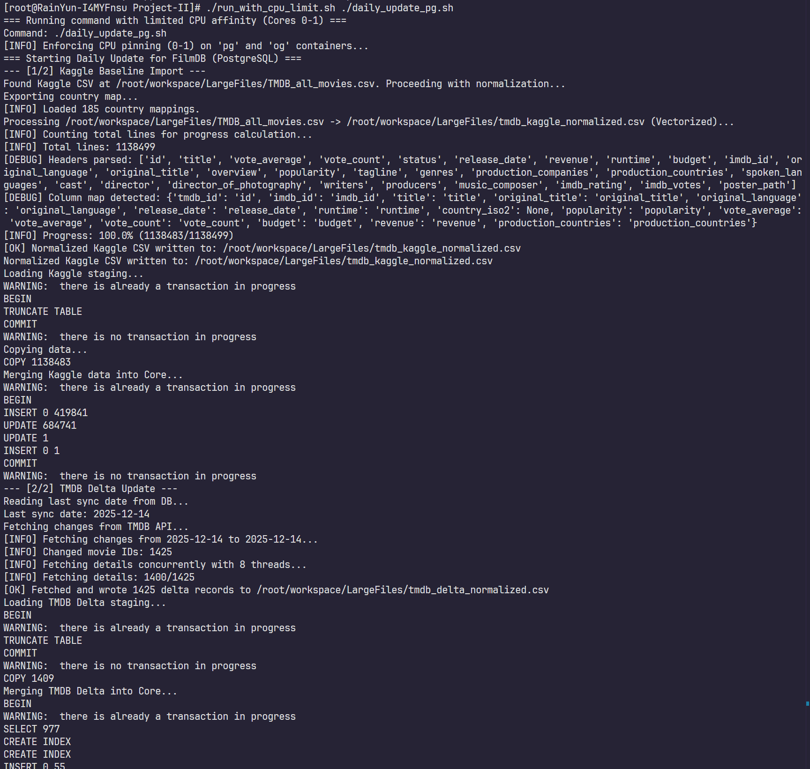
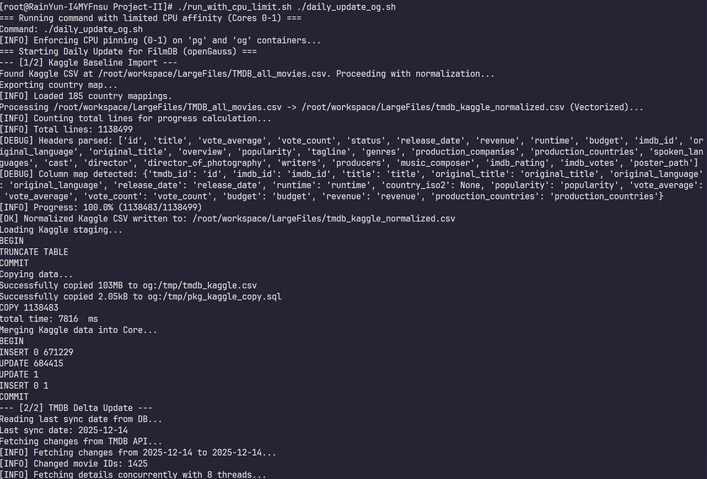
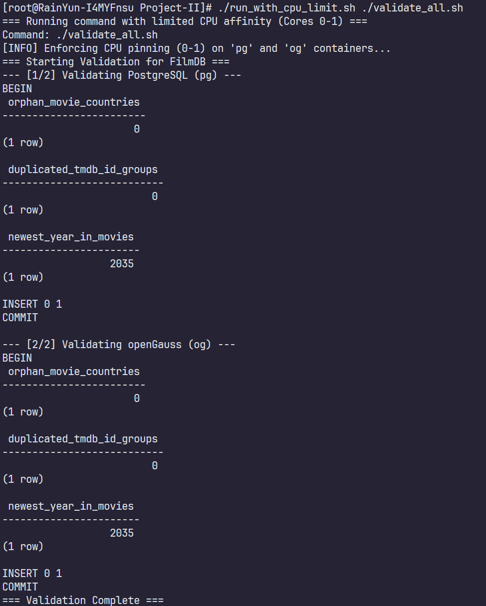
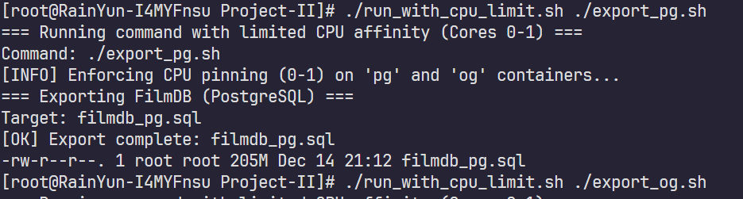
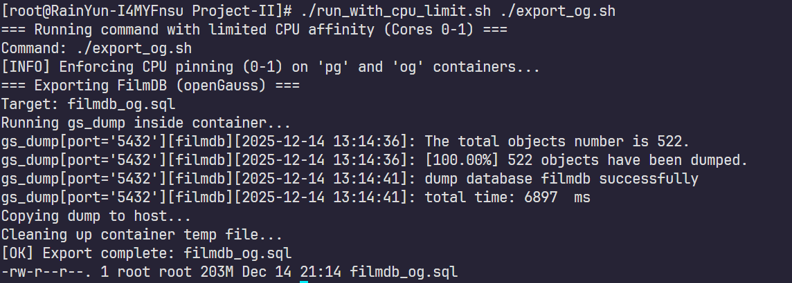
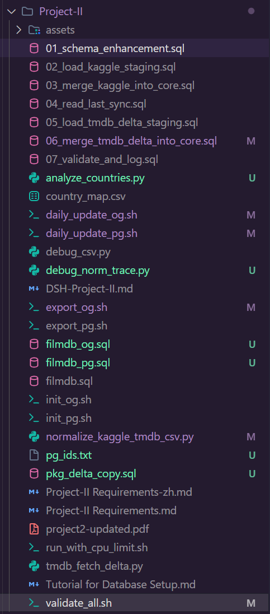

Improve the database FilmDB and Course Materials - DSH-Project-IIPublishmentTasks1. Database Enhancement2. Lecture Notes Review3. Course Content ProposalPrefaceAcknowledgementEnvironment1. Database Enhancement1.1 Data Sources1.1.1 Kaggle (Daily-updated TMDB dataset)1.1.2 TMDB Official API1.2 Workflow1.3 Design1.3.1 Preserve the original tables, add new tables and columns1.3.2 New high-utility tables1.4 Compatibility Strategy for PostgreSQL and openGauss1.4.1 Approach1.4.2 Avoid DB-specific UPSERT syntax by using staging + merge logic1.5 Pipeline1.5.1 One-time setup1.5.2 Daily baseline import from Kaggle1.5.3 Incremental catch-up using TMDB API1.5.4 Data validation and integrity checks1.6 Implementation1.6.1 Environment Preparation1.6.2 Database Initialization1.6.3 Daily Update (Kaggle Baseline + TMDB Delta + Validation)1.6.4 Export Deliverables (Final SQL Dumps)1.6.5 Troubleshooting1.7 Results1.7.1 init_pg.sh1.7.2 init_og.sh1.7.3 daily_update_pg.sh1.7.4 daily_update_og.sh1.7.5 validate_all.sh1.7.6 export_pg.sh1.7.7 export_og.sh1.7.8 Ultimate Files2. Lecture Notes Review2.1 CS213 Lecture-01 CS213-DB-01.pdf2.1.1 Slides Updates2.1.1.1 Page 32.1.1.2 Page 142.1.1.3 Pages 15–162.1.1.4 Page 252.1.1.5 Page 262.1.1.6 Pages 29–362.1.1.7 Pages 38–402.1.1.8 Page 412.1.1.9 Pages 61–642.1.1.10 Page 742.1.1.11 Pages 76–832.1.2 openGauss insertion2.1.3 References2.2 CS213 Lecture-02 CS213-DB-02.pdf2.2.1 Slides Updates2.2.1.1 Page 92.2.1.2 Page 172.2.1.3 Pages 24–252.2.1.4 Page 282.2.1.5 Pages 30–312.2.1.6 Page 322.2.1.7 Page 362.2.1.8 Page 462.2.1.9 Page 492.2.1.10 Pages 50–532.2.1.11 Page 602.2.1.12 Page 632.2.1.13 Pages 65–662.2.2 openGauss insertion2.2.3 References2.3 CS213 Lecture-03 CS213-DB-03.pdf2.3.1 Slides Updates2.3.1.1 Page 92.3.1.2 Page 112.3.1.3 Page 132.3.1.4 Page 142.3.1.5 Page 152.3.1.6 Page 232.3.1.7 Page 262.3.1.8 Page 272.3.1.9 Pages 29–312.3.1.10 Pages 33–362.3.1.11 Page 552.3.1.12 Page 572.3.1.13 Page 582.3.1.14 Page 652.3.1.15 Pages 72–73 and 78–792.3.2 openGauss insertion2.3.3 References2.4 CS213 Lecture-04 CS213-DB-04.pdf2.4.1 Slides Updates2.4.1.1 Page 32.4.1.2 Page 72.4.1.3 Pages 14–152.4.1.4 Page 162.4.1.5 Page 192.4.1.6 Page 212.4.1.7 Page 222.4.1.8 Pages 23–272.4.1.9 Pages 33 and 672.4.1.10 Page 452.4.1.11 Page 432.4.1.12 Page 492.4.1.13 Page 532.4.1.14 Pages 68–692.4.2 openGauss insertion2.4.3 References2.5 CS213 Lecture-05 CS213-DB-05.pdf2.5.1 Slides Updates2.5.1.1 Page 102.5.1.2 Page 162.5.1.3 Page 182.5.1.4 Pages 21–272.5.1.5 Page 292.5.1.6 Page 322.5.1.7 Pages 35–362.5.1.8 Pages 38–412.5.1.9 Page 472.5.1.10 Pages 44 and 502.5.1.11 Page 662.5.1.12 Pages 76–792.5.1.13 Page 812.5.1.14 Page 852.5.2 openGauss insertion2.5.3 References2.6 CS213 Lecture-06 CS213-DB-06.pdf2.6.1 Slides Updates2.6.1.1 Pages 3–92.6.1.2 Page 112.6.1.3 Page 142.6.1.4 Page 152.6.1.5 Pages 17–182.6.1.6 Pages 22–262.6.1.7 Pages 33–352.6.1.8 Page 372.6.1.9 Pages 52–532.6.1.10 Pages 60 and 672.6.2 openGauss insertion2.6.3 References2.7 CS213 Lecture-07 CS213-DB-07.pdf2.7.1 Slides Updates2.7.1.1 Pages 8–122.7.1.2 Page 92.7.1.3 Page 202.7.1.4 Page 212.7.1.5 Page 232.7.1.6 Page 262.7.1.7 Page 282.7.1.8 Page 292.7.1.9 Page 372.7.1.10 Page 382.7.1.11 Pages 54–592.7.1.12 Page 682.7.1.13 Pages 70–73, 80–822.7.2 openGauss insertion2.7.3 References2.8 CS213 Lecture-08 CS213-DB-08.pdf2.8.1 Slides Updates2.8.1.1 Page 32.8.1.2 Page 42.8.1.3 Page 82.8.1.4 Pages 10–122.8.1.5 Pages 15–162.8.1.6 Page 242.8.1.7 Pages 25–262.8.1.8 Pages 27–292.8.1.9 Page 332.8.1.10 Page 352.8.1.11 Pages 36–392.8.1.12 Page 412.8.1.13 Pages 44–472.8.1.14 Pages 49–552.8.1.15 Page 562.8.2 openGauss insertion2.8.3 References2.9 CS213 Lecture-09 CS213-DB-09.pdf2.9.1 Slides Updates2.9.1.1 Page 12.9.1.2 Page 32.9.1.3 Page 62.9.1.4 Page 92.9.1.5 Pages 14–162.9.1.6 Page 172.9.1.7 Pages 19–252.9.1.8 Pages 38–402.9.1.9 Page 432.9.1.10 Page 442.9.1.11 Page 472.9.1.12 Pages 53–592.9.1.13 Pages 63–672.9.2 openGauss insertion2.9.3 References2.10 CS213 Lecture-10 CS213-DB-10.pdf2.10.1 Slides Updates2.10.1.1 Page 62.10.1.2 Pages 11–152.10.1.3 Page 122.10.1.4 Pages 18–202.10.1.5 Page 212.10.1.6 Pages 32–332.10.1.7 Page 342.10.1.8 Pages 44–462.10.1.9 Page 512.10.1.10 Page 802.10.1.11 Pages 96–1022.10.2 openGauss insertion2.10.3 References2.11 CS213 Lecture-11 CS213-DB-11.pdf2.11.1 Slides Updates2.11.1.1 Page 52.11.1.2 Page 102.11.1.3 Page 142.11.1.4 Pages 18–192.11.1.5 Page 232.11.1.6 Page 252.11.1.7 Page 432.11.1.8 Page 482.11.1.9 Page 512.11.1.10 Pages 52–552.11.1.11 Page 542.11.1.12 Page 582.11.1.13 Pages 59–612.11.2 openGauss insertion2.11.2.1 Insert after Page 5 (View syntax)2.11.2.2 Insert after Page 25 (Computed expressions and indexes)2.11.2.3 Insert after Pages 35–36 (Views-on-views performance)2.11.2.4 Insert after Pages 43–49 (Privileges)2.11.2.5 Insert after Page 54 (Modifying a view)2.11.3 References2.12 CS213 Lecture-12 CS213-DB-12.pdf2.12.1 Slides Updates2.12.1.1 Page 42.12.1.2 Page 62.12.1.3 Pages 6–82.12.1.4 Pages 10–112.12.1.5 Pages 12–132.12.1.6 Pages 16–182.12.1.7 Pages 19–222.12.1.8 Page 252.12.1.9 Pages 28–292.12.1.10 Page 302.12.1.11 Page 322.12.1.12 Page 392.12.2 openGauss insertion2.12.3 References2.13 CS213 Lecture-13 CS213-DB-13.pdf2.13.1 Slides Updates2.13.1.1 Page 32.13.1.2 Page 112.13.1.3 Page 142.13.1.4 Pages 15–162.13.1.5 Pages 22–262.13.1.6 Pages 30–312.13.1.7 Page 322.13.1.8 Page 362.13.1.9 Page 382.13.1.10 Page 432.13.1.11 Pages 46–532.13.2 openGauss insertion2.13.3 References3. Course Content Proposal3.1 Distributed and Cloud-Native Databases Track3.1.1 Replication, Read/Write Splitting, and Consistency Expectations3.1.2 Distributed Transactions: 2PC, Failure Modes, and Saga Alternatives3.1.3 Elasticity and Cost–Performance Co-Optimization in Cloud Deployments3.1.4 HTAP and Real-Time Analytics: OLTP Meets OLAP3.2 AI-Era Databases and Retrieval Track3.2.1 Production Text Search: From LIKE to Full-Text Search3.2.2 Vector Search and Hybrid Retrieval: Concepts and Course-Level Practice3.2.3 AI-Assisted Database Engineering Workflow: Verified, Reproducible, and Safe3.2.4 Observability and Performance Regression: Evidence-Driven Debugging3.2.5 Mini-Project Option: Search Feature for the Course Database3.3 Privacy, Compliance, and Data Ethics Track3.3.1 Data Classification and Minimization3.3.2 Access Control and Auditability3.3.3 De-identification, Masking, and Encryption Basics3.3.4 Data Lifecycle: Retention, Deletion, and “Right to be Forgotten”3.4 Database Low-Level Operating Principles Track3.4.1 On-Disk Storage: Pages, Tuples, and Slotted Layout3.4.2 Buffer Manager and I/O: Why Memory Settings Matter3.4.3 WAL and Crash Recovery: Durability in Practice3.4.4 Concurrency Control: MVCC, Locks, and Vacuum/GC3.4.5 Query Execution Engine: Operators and Plan-to-Performance Mapping3.4.6 Capstone Mini-Lab: “From Bytes to Behavior”3.5 SummarySummary
The provided filmdb.sql includes directives like PRAGMA that are not compatible with PostgreSQL/openGauss, and the country codes in it are not strictly ISO-3166, and the most significant, it's not latest (only until 2019). Overall, this report aims to refresh the database and keep it latest.
I acknowledge the use of multiple AI tools during the preparation of this report (including ChatGPT 5.2 Thinking, Gemini 3 Pro, Gemini 3 Pro (High, Antigravity), Claude Opus 4.5 (Thinking, Antigravity), GPT-5.1-codex-max (cursor), e.t.c.) to support drafting, code assistance, and language refinement. All AI-generated content was subsequently manually reviewed, reorganized, edited, and cleaned to ensure accuracy, originality, and clarity. Where applicable, the outputs were further validated through practical experiments to confirm correctness and executability.
To ensure transparency and reproducibility, the core code has been fully disclosed, and execution screenshots are included in the report, so that all presented content remains meaningful, concise, and valuable to the reader. In addition, as the data is used solely for research and educational purposes, the data usage and attribution comply with the relevant requirements and guidelines of sources such as Kaggle and TMDB.
Cloud Server
System: CentOS 9 Stream
Configuration:
4core vCPU
4GiB RAM
30GiB ROM
10Mbps Upload / Download
IP: 23.141.172.26
Location: HK
PostgreSQL: 17.7
openGauss: 5.0.1
With Docker
Tips: The Tutorial for Database Setup.pdf is provided for installing databases in this environment.
This project requires “as new as possible”, therefore ideally updated to the day the program runs, and extensible to run daily in the future. This report provides a union plan to solve it.
Use a daily refreshed Kaggle dataset based on TMDB as the main baseline source.
Kaggle is updated daily, but the program must reflect “today” whenever it runs. Therefore, TMDb official API is used as an incremental “delta” source after Kaggle import.
Download Kaggle daily snapshot (baseline).
Load into staging tables.
Merge into FilmDB core tables (movies, countries, and any new enhancement tables).
Read last sync timestamp from a local metadata table.
Use TMDb Changes API to fetch changed IDs from last sync date to today.
Pull details for each changed movie ID; apply inserts/updates in a controlled transaction.
Validate constraints and export SQL.
Keep existing core tables (movies, countries, people, credits, e.t.c.). Add new columns and new tables for external identifiers and richer metadata.
Enhance movies with new columns (nullable):
tmdb_id (unique, nullable for legacy rows)
imdb_id (nullable)
release_date (nullable)
original_title (nullable)
original_language (nullable)
popularity (nullable numeric)
vote_average (nullable numeric)
vote_count (nullable integer)
budget (nullable bigint)
revenue (nullable bigint)
Add new tables:
movie_update_log(sync_id, run_ts, source, dataset_version, start_date, end_date, status, notes) to record each update run.
country_code_alias(alias_code, canonical_code) to map ISO codes into FilmDB’s internal codes (e.g., map es to sp to avoid breaking the existing countries table).
staging_movies_* tables (temporary or persistent) to allow safe bulk imports and deterministic merges.
Principles:
Keep the original (title, country, year_released) uniqueness for backward compatibility if possible.
Add UNIQUE (tmdb_id) where tmdb_id IS NOT NULL to ensure stable identity for incremental updates.
Use tmdb_id as the primary identifier; if tmdb_id is NULL, fall back to the legacy uniqueness key (title, country, year_released) to resolve identity and prevent duplicates.
Produce two SQL outputs for maximum safety:
filmdb_pg.sql for PostgreSQL.
filmdb_og.sql for openGauss.
Even though openGauss can run in PG compatibility mode, differences still exist (e.g. notably upsert syntax).
Generating two scripts avoids unexpected failures in real environments.
Instead of relying on PostgreSQL ON CONFLICT or openGauss ON DUPLICATE KEY UPDATE, implement portable merge logic:
Insert Kaggle rows into staging tables without strict constraints.
Normalize and deduplicate in SQL queries that use NOT EXISTS joins.
Update existing rows with deterministic rules (only update if new data is non-null and different). This approach works consistently across PostgreSQL and openGauss with minimal dialect differences.
This pipeline is designed to be reproducible and runnable on any day. Kaggle provides a daily-updated TMDb baseline snapshot, and the TMDb official API is used to catch up to “today” by applying incremental changes since the last sync date.
Configure Kaggle API:
Save Kaggle token to ~/.kaggle/kaggle.json.
Typical permissions requirement: chmod 600 ~/.kaggle/kaggle.json.
Download the dataset snapshot with Kaggle CLI:
kaggle datasets download -d alanvourch/tmdb-movies-daily-updates -p ~/workspace/LargeFiles/ --unzip
Confirm baseline CSV location:
The extracted Kaggle CSV is already available at ~/workspace/LargeFiles/TMDB_all_movies.csv.
Configure TMDB API:
Obtain a TMDb API credential (API Read Access Token / Bearer token).
Export it for the pipeline runner:
export TMDB_BEARER_TOKEN="YOUR_TOKEN_HERE".
Here's my API Read Access Token, it's necessary to apply one on https://www.themoviedb.org/settings/api.

Initialize DB schema enhancement (run once):
Apply schema extensions (new columns on movies, new tables pipeline_state, movie_update_log, country_code_alias, and staging tables).
This is executed by running 01_schema_enhancement.sql.
Normalize Kaggle CSV to a stable staging format
Motivation: Kaggle datasets often contain malformed quoting that breaks standard parsers. The updated script uses Python's robust csv standard library to pre-parse data before vectorizing with Pandas, recovering ~99% of valid records (from <10k to >670k rows).
Input: ~/workspace/LargeFiles/TMDB_all_movies.csv
Output: ~/workspace/LargeFiles/tmdb_kaggle_normalized.csv
Load Kaggle normalized CSV into staging
Truncate staging and load the normalized CSV into staging_movies_kaggle.
Use 02_load_kaggle_staging.sql.
PostgreSQL: Uses client-side \copy for simplicity.
openGauss: Uses robust container-file-copy (docker cp) plus server-side COPY to avoid shell buffer limits and encoding issues unique to gsql.
Merge Kaggle staging into FilmDB core tables
Normalize and map country codes (e.g., ISO es mapped to FilmDB sp) via country_code_alias.
Insert new movies and update existing ones with deterministic rules:
Use tmdb_id as the primary identifier when available.
If tmdb_id is NULL, fall back to (title, country, year_released) as the legacy identity key.
Handle legacy-key collisions deterministically (e.g., if a new row’s legacy key matches an existing movie with a different tmdb_id, apply a traceable title suffix within length limits).
This is executed by 03_merge_kaggle_into_core.sql.
Log baseline completion
Insert a success record into movie_update_log with source='kaggle' and the dataset version string if recorded.
This is included in 03_merge_kaggle_into_core.sql.
Determine the incremental window
Read the last successful sync date from pipeline_state.tmdb_last_sync.
Use it as start_date; set end_date to the current date (run day).
This can be retrieved by running 04_read_last_sync.sql.
Fetch changed movie IDs and write a TMDb delta CSV
Use the TMDb “Changes” endpoint to fetch changed movie IDs between start_date and end_date (chunk into <=14-day windows if needed).
Fetch details for each changed ID, normalize fields into a stable delta CSV.
Output: ~/workspace/LargeFiles/tmdb_delta_normalized.csv.
Load delta CSV into staging and merge into core
Load tmdb_delta_normalized.csv into staging_movies_tmdb_delta using 05_load_tmdb_delta_staging.sql.
Merge delta staging into core:
Insert missing movies by tmdb_id.
Update existing movies by tmdb_id using “fill-if-null / improve-if-empty” rules.
Update pipeline_state.tmdb_last_sync to the run day for the next one-click incremental update.
This is executed by 06_merge_tmdb_delta_into_core.sql.
Log delta completion
Insert a success record into movie_update_log with source='tmdb'.
This is included in 06_merge_tmdb_delta_into_core.sql.
After changes:
Verify referential integrity:
Ensure every movies.country exists in countries.country_code.
Verify uniqueness invariants:
Ensure no duplicated non-null tmdb_id values exist in movies (enforced by a unique index).
Verify “newest year” signal:
Check MAX(year_released) to confirm the database now extends beyond 2019.
Log validation results:
Record validation execution in movie_update_log for traceability.
These checks are executed by 07_validate_and_log.sql, orchestrated by the wrapper script validate_all.sh which runs verify on both databases.
To implement the update pipeline more conveniently and make it fully reproducible, we prepared a set of batch scripts (shell scripts) that automate the complete workflow. A specialized wrapper run_with_cpu_limit.sh is provided to enforce CPU affinity (pinning to cores 0-1) to prevent resource contention during intensive parallel data loading.
Before running any scripts, ensure the following environment is ready:
Docker / permissions (if you run the DB in Docker): make sure you have permission to run Docker commands (e.g., newgrp docker or sudo privileges, depending on your system setup).
API tokens and input files:
Kaggle: ensure ~/.kaggle/kaggle.json exists, or make sure the Kaggle CSV has already been downloaded and extracted to ~/workspace/LargeFiles/.
Baseline CSV path: the extracted Kaggle dataset CSV is expected at ~/workspace/LargeFiles/TMDB_all_movies.csv.
TMDb: set the environment variable TMDB_BEARER_TOKEN before running daily updates:
export TMDB_BEARER_TOKEN="your_token_here"
Python dependencies: make sure pandas and requests are installed (used for CSV normalization and TMDb delta fetching).
These scripts rebuild the filmdb database from scratch, load the original filmdb.sql, and then apply schema extensions via 01_schema_enhancement.sql. This ensures the database contains the required staging tables, metadata tables, and the extra columns needed for the new pipeline (e.g., tmdb_id).
PostgreSQL
xxxxxxxxxx11./init_pg.shopenGauss
xxxxxxxxxx11./init_og.shNote: This step will drop (delete) the existing filmdb database and recreate it. Do not run it if you need to preserve the current database state.
These scripts execute the full daily ETL process:
Kaggle baseline import
If ~/workspace/LargeFiles/TMDB_all_movies.csv exists, the script will automatically normalize it into a stable schema (fixed columns) and load it into staging tables, then merge into FilmDB core tables.
TMDB incremental sync (delta layer) The script reads the “last sync date” from the database metadata table, calls the TMDB API to fetch changes since that date up to “today”, downloads the latest details for changed movies, loads the delta into staging, and merges it into core tables.
Validation
After merges, the script runs integrity checks (e.g., country foreign-key validity and tmdb_id uniqueness) and records run status in the update log.
PostgreSQL
xxxxxxxxxx21export TMDB_BEARER_TOKEN="your_token_here"2./run_with_cpu_limit.sh ./daily_update_pg.shopenGauss
xxxxxxxxxx21export TMDB_BEARER_TOKEN="your_token_here"2./run_with_cpu_limit.sh ./daily_update_og.shAfter daily updates are complete, export the final deliverable SQL files. This produces two outputs to maximize compatibility and avoid environment-specific failures:
PostgreSQL export
xxxxxxxxxx11./run_with_cpu_limit.sh ./export_pg.shOutput file: filmdb_pg.sql
openGauss export
xxxxxxxxxx11./run_with_cpu_limit.sh ./export_og.shOutput file: filmdb_og.sql
Permission errors: ensure all scripts are executable:
xxxxxxxxxx11chmod +x *.shToken errors: if the daily update scripts report missing TMDB token, verify the variable is set:
xxxxxxxxxx11echo $TMDB_BEARER_TOKENFile not found: ensure the baseline directory exists and contains the Kaggle CSV:
~/workspace/LargeFiles/
~/workspace/LargeFiles/TMDB_all_movies.csv
If the baseline CSV is missing, re-download the Kaggle dataset and confirm it is extracted to the expected location before running the daily update scripts.
init_pg.sh
init_og.sh
daily_update_pg.sh
daily_update_og.sh
validate_all.sh
export_pg.sh
export_og.sh

Replace with
Use textbooks and official docs first. If you use an LLM, treat it as a drafting assistant and verify with primary sources and experiments.
Validate claims by running small SQL tests.
Change
Remove wealth ranking and net worth claims.
Keep Oracle founder and Oracle DB historical impact.
Fix
Yahoo PNuts → Yahoo PNUTS
Replace with
Relational model: relations are unordered.
SQL: result order is unspecified unless ORDER BY is used.
Link: PostgreSQL ORDER BY
Replace with
Theory: relations are sets; duplicate tuples are not meaningful.
SQL: duplicates may exist unless prevented by constraints; DISTINCT removes duplicates in query results.
Add one slide after Page 36
PRIMARY KEY enforces uniqueness and NOT NULL.
UNIQUE prevents duplicates.
FOREIGN KEY enforces referential integrity.
Replace with two concepts
Data cleaning and standardization: consistent capitalization, date formats, codes, units, validation, deduplication.
Schema normalization: 1NF, 2NF, 3NF reduce redundancy and update anomalies. Link: Microsoft normalization description
Replace with
1NF: no repeating groups; attributes are atomic for the purpose.
Splitting names is often useful for querying but depends on application requirements.
Change
Replace confusing geopolitical code examples with a neutral dependency example such as zipcode → city → state.
Model historical codes using a reference table when history matters.
Replace definitions with
2NF: in 1NF, and no partial dependency of any non-key attribute on part of a composite key.
3NF: in 2NF, and no transitive dependency among non-key attributes.
Link: OpenTextBC normalization
Add one slide after Page 83
Entity becomes table.
1:N becomes foreign key on the many side.
M:N becomes junction table with composite primary key and two foreign keys.
Insert after Page 11 (DBMS introduction) Reason: The lecture introduces “DBMS” but gives no modern concrete system example; openGauss provides a locally relevant, PostgreSQL-like relational DBMS for later demos and labs. Link: openGauss overview
Insert after Page 16 (history timeline ends at 2010s) Reason: Timeline stops at 2010s; add 2020s trends and introduce openGauss (2020–) to keep the “history” section current. Link: Huawei announcement
Insert after Page 25 (row order) Reason: Students often confuse relational theory with SQL behavior; add a short openGauss query demo to reinforce “ORDER BY is required for guaranteed order”. Demo snippet for the new slide:
xxxxxxxxxx21SELECT title, year FROM movies;2SELECT title, year FROM movies ORDER BY year;Link: openGauss ORDER BY
Note: openGauss may run in different compatibility modes; in PostgreSQL-like mode the behavior matches PostgreSQL, but you should still treat order as unspecified without ORDER BY.
Insert after Page 26 (duplicates)
Reason: The slide states duplicates are forbidden, but SQL query results can contain duplicates; add openGauss demo to show DISTINCT and mention constraints (PRIMARY KEY, UNIQUE).
Demo snippet for the new slide:
xxxxxxxxxx51INSERT INTO directors(firstname, surname) VALUES ('Chris','Nolan');2INSERT INTO directors(firstname, surname) VALUES ('Chris','Nolan');3
4SELECT firstname, surname FROM directors;5SELECT DISTINCT firstname, surname FROM directors;Link: openGauss DISTINCT
Insert after Page 36 (keys) Reason: Keys are introduced conceptually; add one openGauss DDL slide mapping keys to real constraints, so students see “concept → SQL”. Demo snippet for the new slide:
xxxxxxxxxx61CREATE TABLE directors (2 director_id SERIAL PRIMARY KEY,3 firstname TEXT NOT NULL,4 surname TEXT NOT NULL,5 CONSTRAINT uq_director_name UNIQUE(firstname, surname)6);Insert after Page 83 (ER modeling) Reason: ER is taught, but students need the bridge to SQL; add an openGauss “ER → DDL” example, especially M:N junction tables. Demo snippet for the new slide:
xxxxxxxxxx51CREATE TABLE movie_actor (2 movie_id INT NOT NULL REFERENCES movies(movie_id),3 actor_id INT NOT NULL REFERENCES actors(actor_id),4 PRIMARY KEY (movie_id, actor_id)5);Fix
descendents → descendants
Add after the “SQL standard exists” point
SQL has an ISO/IEC standard, but real systems ship dialects. Always check the DBMS manual for edge cases and extensions.
openGauss uses a PostgreSQL-like dialect plus compatibility features.
Replace with
Keywords are case-insensitive.
Identifiers depend on quoting: unquoted identifiers are folded by the system; quoted identifiers preserve case and can include spaces.
Naming rules vary by DBMS; avoid quoted identifiers in teaching examples.
Replace with
Empty string and NULL are different concepts in SQL.
Oracle treats empty strings in text types as NULL, which is nonstandard behavior.
In openGauss, empty string is not NULL.
Fix
PostreSQL → PostgreSQL
Replace the date-time bullets with
DATE stores a calendar date.
TIMESTAMP stores date and time; precision varies by product.
Some products use DATETIME as a name; PostgreSQL and openGauss use TIMESTAMP.
Replace the “bad CREATE TABLE” example with a clean version
xxxxxxxxxx81CREATE TABLE people (2 peopleid SERIAL PRIMARY KEY,3 first_name VARCHAR(30),4 surname VARCHAR(30) NOT NULL,5 born INT NOT NULL,6 died INT,7 CONSTRAINT ck_life CHECK (died IS NULL OR died >= born)8);Add
Mention COMMENT ON works in PostgreSQL-like systems including openGauss.
Add
Case-insensitive uniqueness depends on collation; demonstrate a functional unique index.
Update
Replace “MySQL accepts CHECK but doesn't enforce it” with:
Older MySQL versions parsed CHECK but ignored it; modern MySQL enforces CHECK.
openGauss enforces CHECK constraints.
Add after the foreign key definition
Show ON DELETE RESTRICT, ON DELETE CASCADE, ON DELETE SET NULL.
Remind students referenced columns must be PRIMARY KEY or UNIQUE.
Replace with
Use single quotes for strings.
Double quotes are for identifiers in standard SQL and in openGauss.
Add
Prefer standard escaping by doubling single quotes.
Avoid backslash escaping in portable SQL examples.
Replace with
Prefer ISO dates YYYY-MM-DD.
For portability, use DATE '1969-07-20' or explicit formatting with to_date.
Insert after Page 17 (SQL standard vs dialects) Reason: Students need one concrete dialect target; openGauss is a PostgreSQL-like dialect and fits the lecture’s “dialects” message. Link: openGauss overview
Insert after Pages 24–25 (identifiers and naming) Reason: Quoting and case rules vary by product; add openGauss guidance to avoid teaching “quoted identifiers everywhere” habits. Suggested note: “Prefer lowercase snake_case; avoid quoted names unless required.”
Insert after Page 28 (NULL vs empty string) Reason: Oracle’s empty-string-as-NULL is a common confusion point; add a one-line openGauss contrast so students don’t generalize Oracle behavior.
Insert after Pages 30–31 (date/time types) Reason: The lecture mentions DATETIME vs TIMESTAMP; add an openGauss mapping slide so students know what to use in openGauss.
Insert after Pages 50–53 (constraints and foreign keys) Reason: This is where students decide “do I actually enforce rules?”; add openGauss examples to show CHECK/UNIQUE/FK are real and enforceable. Demo snippet for the new slide:
xxxxxxxxxx121CREATE TABLE countries (2 country_code CHAR(2) PRIMARY KEY,3 country_name TEXT NOT NULL UNIQUE4);5
6CREATE TABLE movies (7 movieid INT PRIMARY KEY,8 title TEXT NOT NULL,9 country CHAR(2) NOT NULL REFERENCES countries(country_code) ON DELETE RESTRICT,10 year_released INT NOT NULL CHECK (year_released >= 1895),11 UNIQUE (title, country, year_released)12);Insert after Pages 65–66 (INSERT, quoting, dates) Reason: This is where students write lots of literals; add openGauss “safe quoting + ISO date” examples to reduce beginner errors. Demo snippet for the new slide:
xxxxxxxxxx41INSERT INTO movies(movieid, title, country, year_released)2VALUES (1, 'L''Avventura', 'it', 1960);3
4SELECT CURRENT_DATE, CURRENT_TIMESTAMP;Replace with
String literals must use single quotes: where surname = 'Han'.
Unquoted text is treated as an identifier (column/table name), not a string.
Double quotes are for identifiers in standard SQL (PostgreSQL/openGauss), not for strings.
Fix
== → = in SQL examples.
Replace the derived-table example with a clean version
xxxxxxxxxx71SELECT *2FROM (3 SELECT *4 FROM movies5 WHERE country = 'us'6) AS us_movies7WHERE year_released BETWEEN 1940 AND 1949;Fix
performance-wise (use consistent hyphenation)
Add
Note: rewriting queries into nested filters may be equivalent logically, but may differ in performance depending on the optimizer.
Add
Avoid comparing dates as strings; store/use proper date types and cast explicitly when needed.
Prefer ISO dates (YYYY-MM-DD) to avoid ambiguous formats.
Add
Operator precedence reminder: AND binds tighter than OR. Use parentheses to avoid mistakes.
Add
Suggest using IN (...) for readability, but still encourage parentheses for mixed AND/OR conditions.
Fix
casesensitive → case-sensitive
Replace with
Case sensitivity depends on collation/DBMS settings.
If you need case-insensitive matching, prefer an explicit case-insensitive operator (when available) instead of duplicating conditions.
Fix
performancewise → performance-wise
Replace with
Applying functions like upper(title) inside WHERE can prevent index usage.
Prefer case-insensitive operators or functional indexes when needed.
Replace with
Date formats can be ambiguous across regions; prefer ISO input.
When converting strings to dates, always specify the format (avoid relying on DB defaults).
Replace with
For timestamp/datetime columns, avoid = comparisons to a date-only literal.
Teach a safe “whole-day” filter using a half-open interval:
ts >= DATE '2021-03-02' AND ts < DATE '2021-03-03'
Replace with
These are tool/DBMS-specific describe commands (not standard SQL):
MySQL: DESC table;
PostgreSQL/openGauss (gsql): \d table
SQLite: .schema table
Fix the concatenation examples
Show complete, correct forms:
Standard-ish: 'hello' || ' world'
SQL Server: 'hello' + ' world'
MySQL/openGauss (also supported widely): concat('hello', ' world')
Replace with
Always cast explicitly when mixing numbers and strings.
Use AS for readability.
xxxxxxxxxx41SELECT2 title || ' was released in ' || CAST(year_released AS varchar) AS movie_release3FROM movies4WHERE country = 'us';Fix
round(3.141592, 3) → 3.142
trunc(3.141592, 3) → 3.141
Replace with
Always include an ELSE branch (otherwise the result can be NULL).
Prefer “searched CASE” (CASE WHEN ...) for NULL checks and realistic conditions.
Avoid long, unrealistic enumerations (e.g., one WHEN per year); use conditions like died IS NULL.
Insert after Page 9 (string vs identifier quoting) Reason: Students copy quoting habits early; openGauss follows PostgreSQL-style quoting (single quotes for strings, double quotes for identifiers). Link: gsql Tool Reference
Insert after Pages 26–27 (case-insensitive matching, performance)
Reason: The lecture warns that upper(title) in WHERE is slow; openGauss provides ILIKE as the explicit solution. Also, openGauss Dolphin compatibility can change LIKE behavior, so teach ILIKE to be unambiguous.
Demo snippet:
xxxxxxxxxx31SELECT *2FROM movies3WHERE title ILIKE '%a%';Link: Mode Matching Operators Link: Dolphin Character Processing Functions and Operators
Insert after Pages 29–31 (ISO dates + parsing) Reason: Date input defaults vary by DBMS; openGauss students should learn ISO literals and explicit parsing. Demo snippet:
xxxxxxxxxx21SELECT DATE '2018-03-12';2SELECT to_date('12 March, 2018', 'DD Month, YYYY');Insert after Pages 33–36 (timestamp “whole-day” filtering) Reason: This is a frequent real-world bug; add one openGauss example showing the half-open interval pattern. Demo snippet:
xxxxxxxxxx41SELECT *2FROM issues3WHERE issued >= DATE '2021-03-02'4 AND issued < DATE '2021-03-03';Insert after Page 55 (how to inspect tables in openGauss) Reason: Students need an actionable “inspect schema” workflow for the course DBMS. Demo snippet:
xxxxxxxxxx91-- in gsql2\d movies3\dt4
5-- portable SQL alternative6SELECT column_name, data_type7FROM information_schema.columns8WHERE table_name = 'movies'9ORDER BY ordinal_position;Link: gsql Tool Reference Link: Meta-Command Reference
Insert after Pages 78–79 (CASE for NULL labeling) Reason: Connect CASE to a simple reporting task and reinforce correct NULL handling in openGauss. Demo snippet:
xxxxxxxxxx61SELECT surname,2 CASE3 WHEN died IS NULL THEN 'Alive'4 ELSE 'Deceased'5 END AS status6FROM people;Link: Expressions
Replace with
Relational theory treats relations as sets (no duplicates).
SQL result sets are often multisets (duplicates may appear).
Use DISTINCT only when you need set semantics, and explain the cost trade-off.
Fix
keywork → keyword
Add
DISTINCT applies to the whole selected row. With multiple columns, it removes rows where all selected columns match.
Replace with
WHERE can stream rows early; DISTINCT and GROUP BY often require additional work before producing results.
Implementation is not always “sorting”: many DBMSs can use hash-based distinct/aggregation as well.
Update
Replace stddev() with standard-style names:
stddev_pop(...), stddev_samp(...) (common in PostgreSQL-like systems, including openGauss).
Keep the message “functions differ by DBMS”, but avoid presenting stddev() as universal.
Add
Clarify purpose:
WHERE filters rows before grouping
HAVING filters groups after aggregation
Replace with
Do not rely on a DBMS “fixing” an inefficient query form.
Prefer pushing filters into WHERE when possible for clarity and performance, and use HAVING only for aggregate conditions.
Add
Add one practical note: use EXPLAIN (or the DBMS equivalent) to see how the optimizer plans joins and aggregations.
Replace with
Most aggregates ignore NULL inputs, but COUNT(*) counts rows.
Show the key distinction explicitly:
COUNT(*) = number of rows
COUNT(col) = number of non-NULL values in col
Fix
Complete the unfinished subquery placeholders so students can run the full query end-to-end.
Replace with a complete version
xxxxxxxxxx111SELECT COUNT(*) AS number_of_acting_directors2FROM (3 SELECT peopleid4 FROM (5 SELECT DISTINCT peopleid, credited_as6 FROM credits7 WHERE credited_as IN ('A', 'D')8 ) AS t9 GROUP BY peopleid10 HAVING COUNT(*) = 211) AS acting_directors;Fix
talbe → table
Replace with
Conceptually, an inner join equals “Cartesian product + filter”.
In practice, DBMSs do not materialize the full product; they use join algorithms (hash join, merge join, nested loops).
Update
NATURAL JOIN is part of standard SQL and is supported by some systems, but it is still a bad default for teaching because it depends on column names and can break when schemas evolve.
Recommend: explicit JOIN ... ON ... with clear keys.
Replace with
Keep the cross-DBMS note, but remove informal wording.
Use one consistent teaching style: table aliases + JOIN ... ON ....
Replace with
Comma joins are historical and still supported, but are easy to get wrong.
Teach explicit join syntax:
INNER JOIN ... ON ...
Use CROSS JOIN only when you truly want a Cartesian product.
Insert after Page 6 (DISTINCT basics)
Reason: The lecture introduces DISTINCT but lacks a concrete course DBMS demo; add an openGauss runnable example and reinforce “row-level distinctness”.
Demo snippet:
xxxxxxxxxx71SELECT DISTINCT country2FROM movies3WHERE year_released = 2000;4
5SELECT DISTINCT country, year_released6FROM movies7WHERE year_released IN (2000, 2001);Link: openGauss DISTINCT
Insert after Page 13 (GROUP BY syntax rule)
Reason: Students commonly select non-aggregated columns that are not in GROUP BY; add an openGauss example showing the correct pattern.
Demo snippet:
xxxxxxxxxx41SELECT country,2 COUNT(*) AS number_of_movies3FROM movies4GROUP BY country;Insert after Page 19 (HAVING vs WHERE)
Reason: The lecture introduces HAVING, but students confuse it with WHERE; add a short openGauss “before vs after grouping” demo.
Demo snippet:
xxxxxxxxxx51SELECT country,2 MIN(year_released) AS oldest_movie3FROM movies4GROUP BY country5HAVING MIN(year_released) < 1940;Link: openGauss HAVING Clause
Insert after Page 22 (optimizer visibility) Reason: The slides mention optimizers differ; add one openGauss tool students can use to observe plans and costs. Demo snippet:
xxxxxxxxxx41EXPLAIN2SELECT country, COUNT(*)3FROM movies4GROUP BY country;Link: openGauss EXPLAIN
Insert after Page 27 (COUNT differences with NULLs) Reason: The lecture explains the concept, but a small openGauss demo makes it stick and prevents common mistakes in analytics queries. Demo snippet:
xxxxxxxxxx31SELECT COUNT(*) AS total_rows,2 COUNT(died) AS non_null_died3FROM people;Insert after Page 54 (JOIN with aliases as the default style) Reason: The lecture shows multiple syntaxes (NATURAL/USING/ON); standardize on the safest teaching pattern for openGauss labs. Demo snippet:
xxxxxxxxxx51SELECT DISTINCT p.first_name, p.surname2FROM people AS p3JOIN credits AS c4 ON c.peopleid = p.peopleid5WHERE c.credited_as = 'D';Link: openGauss JOIN Clause
Insert after Page 69 (avoid accidental Cartesian products)
Reason: The lecture warns about forgetting join predicates; add an openGauss-specific habit: always write explicit joins, and use CROSS JOIN only intentionally.
Demo snippet:
1SELECT COUNT(*)2FROM movies m3CROSS JOIN countries c;Link: openGauss JOIN Clause
Replace with
Books often present LEFT/RIGHT/FULL outer joins. In practice, LEFT OUTER JOIN is the default teaching choice because it reads naturally.
RIGHT OUTER JOIN is equivalent to swapping table order and using LEFT OUTER JOIN.
FULL OUTER JOIN is less common but still useful for “show all rows from both sides”.
Replace with
COALESCE() is widely supported across DBMSs and returns the first non-NULL argument.
Use it for numeric outputs (counts, sums) where showing 0 is clearer than NULL.
Replace with
Join predicates should usually be equality on keys (e.g., FK = PK).
Using <> in a join predicate often creates many unintended matches and can explode row counts.
Add
Outer-join rule of thumb: putting a condition on the outer-joined table in the WHERE clause can turn a LEFT JOIN into an INNER JOIN by filtering out NULL-extended rows.
Prefer placing such conditions in the ON clause (or in a subquery) when you want to keep unmatched rows.
Replace with a simpler “correct” solution
xxxxxxxxxx121 SELECT2 m.year_released,3 m.title,4 p.first_name,5 p.surname6 FROM movies m7 LEFT OUTER JOIN credits c8 ON c.movieid = m.movieid9 AND c.credited_as = 'D'10 LEFT OUTER JOIN people p11 ON p.peopleid = c.peopleid12 WHERE m.country = 'gb';Replace with
If both branches query the same table with simple predicates, OR is often simpler.
Use UNION/UNION ALL when combining results from different queries/tables, or when it improves readability.
Add
UNION removes duplicates and can be expensive.
UNION ALL keeps all rows (no dedup) and is usually faster.
Use UNION ALL when duplicates are meaningful (counts, logs, time partitions).
Replace the placeholder subquery with a complete version
xxxxxxxxxx191 SELECT2 x.movieid,3 SUM(x.view_count) AS view_count4 FROM (5 SELECT6 'last year' AS period,7 movieid,8 SUM(view_count) AS view_count9 FROM last_year_data10 GROUP BY movieid11 UNION ALL12 SELECT13 'this year' AS period,14 movieid,15 SUM(view_count) AS view_count16 FROM current_year_data17 GROUP BY movieid18 ) x19 GROUP BY x.movieid;Fix the broken INTERSECT example
xxxxxxxxxx51 SELECT country_code2 FROM countries3 INTERSECT4 SELECT DISTINCT country5 FROM movies;Add
Standard SQL uses EXCEPT; Oracle calls the same idea MINUS.
In this course (openGauss), use EXCEPT.
Replace with
IN (subquery) behaves like membership testing; duplicates in the subquery do not change the truth value.
Add DISTINCT only for clarity or to reduce work when duplicates are likely.
Add
NOT IN (...) is unsafe if the subquery can produce NULL (it can eliminate all rows).
Prefer NOT EXISTS, or filter NULL explicitly in the subquery.
Replace with
Avoid correlated IN when possible; prefer EXISTS/NOT EXISTS for correlated logic because it makes intent clearer and avoids NULL traps.
Add
In EXISTS, the subquery’s SELECT list is irrelevant; SELECT 1 is a common, clear convention (instead of SELECT NULL).
Insert after Page 10 (outer join types in openGauss) Reason: The slide claims only LEFT OUTER JOIN matters; openGauss supports LEFT/RIGHT/FULL, so students should learn the full vocabulary and the “rewrite RIGHT as LEFT” habit. Link: JOIN (CROSS/INNER/LEFT/RIGHT/FULL)
Insert after Page 16 (COALESCE in openGauss) Reason: This is the practical “show 0 instead of NULL” moment; add the official openGauss function reference to match what students will run in labs. Demo snippet:
xxxxxxxxxx121 SELECT2 c.country_name,3 COALESCE(x.number_of_movies, 0) AS number_of_movies4 FROM countries c5 LEFT OUTER JOIN (6 SELECT7 country AS country_code,8 COUNT(*) AS number_of_movies9 FROM movies10 GROUP BY country11 ) x12 ON x.country_code = c.country_code;Link: COALESCE
Insert after Page 27 (outer join filter placement in openGauss)
Reason: The “outer join killer” is a frequent beginner bug; show the correct openGauss pattern: move the filter into ON.
Demo snippet:
xxxxxxxxxx101 SELECT2 m.title,3 p.surname4 FROM movies m5 LEFT OUTER JOIN credits c6 ON c.movieid = m.movieid7 AND c.credited_as = 'D'8 LEFT OUTER JOIN people p9 ON p.peopleid = c.peopleid10 WHERE m.country = 'gb';Insert after Page 36 (UNION vs UNION ALL in openGauss)
Reason: Students often default to UNION and accidentally lose rows; openGauss supports UNION ALL and documents the required column/type matching.
Link: UNION Clause
Insert after Page 51 (INTERSECT/EXCEPT naming and use in openGauss)
Reason: The slides mention EXCEPT / MINUS; openGauss uses EXCEPT and supports set-operation type resolution similarly to UNION.
Link: UNION, CASE, and Related Constructs
Insert after Page 79 (safe anti-join: NOT EXISTS in openGauss)
Reason: NOT IN + NULL is a real production pitfall; openGauss documents EXISTS/NOT EXISTS directly.
Demo snippet:
xxxxxxxxxx81 SELECT p.*2 FROM people p3 WHERE NOT EXISTS (4 SELECT 15 FROM people p26 WHERE p2.born < 19507 AND p2.first_name = p.first_name8 );Add
SQL does not guarantee row order unless ORDER BY is present.
When you need deterministic output, add a tie-breaker (e.g., ORDER BY year_released, movieid).
Replace with
NULL ordering is DBMS-dependent.
Prefer explicit control when teaching portability: NULLS FIRST / NULLS LAST.
Replace with
Collation defines locale-specific string ordering.
Teach portable syntax first: ORDER BY col COLLATE "..." (DBMS must support the named collation).
Keep the “Chinese collation choice” question as a discussion prompt, but add: “Answer depends on OS/ICU/DB build and installed locales.”
Add
Never sort by a formatted date string; sort by the original date/time column (you may still display the formatted value).
Example to add:
xxxxxxxxxx51SELECT2 to_char(a_date_column, 'MM/DD/YYYY') AS event_date,3 other_cols4FROM some_table5ORDER BY a_date_column;Replace with
Add an ELSE branch so unknown codes don’t become NULL and float unexpectedly in ordering.
Add a secondary order for stable ties.
xxxxxxxxxx81ORDER BY2 CASE credited_as3 WHEN 'D' THEN 14 WHEN 'P' THEN 25 WHEN 'A' THEN 36 ELSE 997 END,8 postid;Add
Offset pagination is easy but can get slower as OFFSET grows; mention “keyset pagination” as the scalable alternative.
For teaching clarity: “Sort first, then limit” is the mental model across dialects (LIMIT / FETCH FIRST / TOP).
Replace with
Materialized path needs a concrete, fixed-width encoding; replace <formated id> with an explicit padding function and include a delimiter.
xxxxxxxxxx11ORDER BY concat(coalesce(path, ''), lpad(postid::text, 9, '0'), '.');Add
Mark CONNECT BY as Oracle-specific and point students to recursive CTEs as the general SQL approach.
Update
Replace “not available in MySQL before 8 or SQLite” with:
“Window functions were missing in older versions of some DBMSs; always check the product/version.”
Fix (incomplete queries): Replace with a complete version
xxxxxxxxxx171SELECT2 country_name,3 cnt AS number_of_movies,4 round(100.0 * cnt / sum(cnt) OVER (), 0) AS percentage5FROM (6 SELECT7 c.country_name,8 coalesce(m.cnt, 0) AS cnt9 FROM countries c10 LEFT JOIN (11 SELECT country, count(*) AS cnt12 FROM movies13 GROUP BY country14 ) m15 ON m.country = c.country_code16) q17ORDER BY country_name;Add
Note: with ORDER BY, the engine must see all rows before returning the first row, so computing totals via window functions often has small incremental cost.
Fix (broken SQL layout): Replace with a clean version
xxxxxxxxxx91SELECT2 title,3 country,4 year_released,5 row_number() OVER (6 PARTITION BY country7 ORDER BY year_released DESC8 ) AS rn9FROM movies;Fix (incomplete “top 2 per country” query): Replace with
xxxxxxxxxx161SELECT2 x.country,3 x.title,4 x.year_released5FROM (6 SELECT7 country,8 title,9 year_released,10 row_number() OVER (11 PARTITION BY country12 ORDER BY year_released DESC, movieid DESC13 ) AS rn14 FROM movies15) x16WHERE x.rn <= 2;Insert after Page 11 (NULL ordering)
Reason: The slides say NULL ordering is DBMS-dependent; add an openGauss demo showing explicit NULLS FIRST/LAST to avoid surprises across systems.
Demo snippet for the new slide:
xxxxxxxxxx51SELECT2 title,3 year_released4FROM movies5ORDER BY year_released ASC NULLS LAST;Link: openGauss ORDER BY Clause
Insert after Page 14 (collation)
Reason: The slide uses Oracle-flavored examples; add an openGauss-friendly note that PostgreSQL-like systems use COLLATE, and collation availability depends on installed locales.
Suggested note: “Use COLLATE when locale-specific ordering matters; test on the target server.”
Insert after Pages 22–26 (top-N and pagination)
Reason: Students will implement paging immediately; add an openGauss example for LIMIT/OFFSET and a brief warning about large offsets.
Demo snippet for the new slide:
xxxxxxxxxx71SELECT2 title,3 country,4 year_released5FROM movies6ORDER BY title7LIMIT 10 OFFSET 20;Link: openGauss ORDER BY Clause
Insert after Pages 33–35 (hierarchies)
Reason: The lecture shows CONNECT BY (Oracle-specific) and mentions recursive queries next; add one openGauss slide that uses WITH RECURSIVE as the portable approach.
Demo snippet for the new slide:
xxxxxxxxxx131WITH RECURSIVE thread AS (2 SELECT postid, answered_postid, message, 1 AS depth3 FROM forum_posts4 WHERE answered_postid IS NULL5 UNION ALL6 SELECT p.postid, p.answered_postid, p.message, t.depth + 17 FROM forum_posts p8 JOIN thread t9 ON p.answered_postid = t.postid10)11SELECT *12FROM thread13ORDER BY depth, postid;Insert after Pages 52–53 (percentage of total)
Reason: The slide’s main query is incomplete; add a runnable openGauss version so students can copy/paste and verify sum(...) over ().
Demo snippet for the new slide: use the completed query from Section 2.6.1.9.
Insert after Pages 60–67 (top-N per group)
Reason: This is a high-value pattern (“top K per category”); add an openGauss slide with a clean row_number() solution and one sentence on tie behavior (row_number vs dense_rank).
Demo snippet for the new slide: use the completed query from Section 2.6.1.10.
Add
State explicitly that the “index table” approach is a teaching simplification; in practice, many DBMSs provide built-in full-text search plus indexes.
Fix
The CREATE TABLE movie_title_ft_index snippet is not valid SQL; replace with a complete DDL.
CREATE TABLE movie_title_ft_index ( title_word VARCHAR(30) NOT NULL, movieid INT NOT NULL, PRIMARY KEY (title_word, movieid), FOREIGN KEY (movieid) REFERENCES movies(movieid) );
Fix
sceneries → scenes
Something may happy → Something may happen
Fix
transfering → transferring
saving account → savings account
Change
Replace runoobdb=# with a neutral prompt like db=# (or openGauss=# if demonstrating openGauss).
Replace with
Concurrency: the DBMS prevents conflicting updates to the same rows; reads vs writes depend on isolation and the DBMS concurrency model (avoid implying “everything is blocked”).
Fix
commited → committed
Add
Many tools behave as “commit each statement” unless an explicit BEGIN starts a transaction.
Fix
mine field → minefield
Add
Add a one-line openGauss note: like PostgreSQL, DDL can run inside a transaction and can be rolled back.
Replace with
Many DBMSs support multi-row INSERT ... VALUES (...), (...). SQLite supports this; Oracle uses different multi-row patterns (for example, INSERT ALL or INSERT ... SELECT).
Add
Strong teaching rule: always specify the column list in INSERT statements (safer than relying on SELECT * order).
Replace with
For PostgreSQL-like systems (including openGauss), prefer INSERT ... RETURNING to retrieve generated identifiers, instead of session-wide “last generated value” functions.
Fix
The text says “one column to receive every field,” but the example defines multiple columns; rephrase as “a staging table mirroring the file columns (often using TEXT first, then cast/clean).”
Fix
Remove stray spaces in file paths (e.g., us_movie_info. txt) to avoid copy/paste failures in demos.
Insert after Page 12 (full-text search overview) Reason: The lecture builds a manual word-index table; add one slide showing openGauss has built-in full-text search operators/functions so students see the “real” approach. (docs.opengauss.org) Link: openGauss Text Search Functions and Operators Demo snippet for the new slide:
xxxxxxxxxx31SELECT movieid, title2FROM movies3WHERE to_tsvector('simple', title) @@ to_tsquery('simple', 'space & odyssey & 2001');
Insert after Page 28 (autocommit warning)
Reason: Students using openGauss should practice explicit transactions in gsql, aligned with the “Beware of autocommit” message. (docs.opengauss.org)
Link: openGauss gsql Tool
Demo snippet for the new slide:
xxxxxxxxxx31BEGIN;2DELETE FROM movies WHERE movieid = 25;3ROLLBACK;
Insert after Page 29 (DDL and commits differ by DBMS) Reason: The slide highlights portability risk; add one openGauss example to show PostgreSQL-like “DDL is transactional” behavior in a concrete way. Demo snippet for the new slide:
xxxxxxxxxx31BEGIN;2CREATE TABLE ddl_demo(id INT);3ROLLBACK;
Insert after Page 46 (sequence function syntax) Reason: The lecture lists multiple syntaxes; add the openGauss function form and one key rule (currval/lastval require nextval in the session). (docs.opengauss.org) Link: openGauss Sequence Functions
Insert after Page 59 (retrieving generated IDs)
Reason: Replace the “last generated value” habit with the clearer, safer openGauss pattern: RETURNING. (docs.opengauss.org)
Link: openGauss INSERT Statement
Demo snippet for the new slide:
xxxxxxxxxx31INSERT INTO movies(title)2VALUES ('Some Movie Title')3RETURNING movieid;
Insert after Page 82 (PostgreSQL COPY / psql \copy)
Reason: The lecture mentions PostgreSQL COPY and \copy; add the openGauss gsql \copy equivalent so students can import local files without server-side file access. (docs.opengauss.org)
Link: openGauss gsql \copy Meta-Command
Demo snippet for the new slide:
xxxxxxxxxx31\copy us_movie_info2FROM 'us_movie_info.csv'3WITH (FORMAT csv);
Fix
lets' → let's.
Fix
“Update is the command than changes …” → “UPDATE is the command that changes column values …”.
Replace with
Avoid row-by-row update loops when a single set-based UPDATE can do the job.
If batching is needed, batch intentionally (by key ranges / chunks) and measure.
Add
When updating from another table, explicitly decide how to handle:
no match (leave as-is vs set to NULL),
multiple matches (must be made unique).
Fix
Replace the broken UPDATE ... FROM example with a correct, runnable version.
xxxxxxxxxx111UPDATE movies_2 AS m2SET duration = i.duration,3 color = CASE i.color4 WHEN 'C' THEN 'Y'5 WHEN 'B' THEN 'N'6 ELSE NULL7 END8FROM us_movie_info AS i9WHERE m.country = 'us'10 AND i.title = m.title11 AND i.year_released = m.year_released;Replace with
UPDATE ... FROM can produce nondeterministic results if one target row matches multiple source rows. Teach students to enforce uniqueness (constraints) or pre-aggregate.
Replace with
Primary keys are usually treated as immutable identifiers in practice, but SQL does not magically forbid key updates.
If a key must change, teach the policy choice: use surrogate keys, or use foreign keys with an explicit ON UPDATE ... rule.
Tighten
Make the “UPSERT” message explicit: there is no single universal syntax; products differ (MERGE, MySQL-style upsert, SQLite-style replace).
Add one warning: the ON (...) match condition should correspond to a declared unique key to avoid accidental multi-matches.
Add
A safe habit: BEGIN; → run DELETE/UPDATE → verify affected rows → COMMIT; or ROLLBACK;.
Replace with
Remove “TRUNCATE … cannot be rolled back” as a general rule.
Replace with:
TRUNCATE is fast because it deallocates data pages rather than scanning rows.
It takes strong locks; use carefully and deliberately.
Fix
“prevent you to do that” → “prevent you from doing that”.
Add
Show ON DELETE RESTRICT | CASCADE | SET NULL as explicit design choices (not implied behavior).
Replace with
“SQLite, not a true DBMS” → “SQLite is an embedded database engine with a different feature set (for example, server-side programmability differs from PostgreSQL-like systems).”
Fix
The function example contains typos; keep one clean final version.
1CREATE OR REPLACE FUNCTION full_name(the_name varchar)2RETURNS varchar3AS $$4BEGIN5 RETURN CASE6 WHEN position(',' IN the_name) > 0 THEN7 trim(' ' FROM substr(the_name, position(',' IN the_name) + 1))8 || ' ' ||9 trim(')' FROM substr(the_name, 1, position(',' IN the_name) - 1))10 ELSE11 the_name12 END;13END;14$$ LANGUAGE plpgsql;Replace with
“A function shouldn’t query the database” → “Avoid scalar lookup functions that execute extra queries per row; prefer joins. Functions can read tables, but use them carefully for performance.”
Replace with
If you mention LLM tools, align with an academic workflow:
use official docs and small tests to verify generated SQL.
Insert after Page 12 (set-based update patterns)
Reason: The slides focus on correlated subqueries; add the openGauss-friendly UPDATE ... FROM pattern as the default approach.
Link: UPDATE Statement
Insert after Page 24 (duplicate join matches) Reason: Students need one concrete rule: ensure the join keys are unique, or the update result can be unpredictable. Show “add UNIQUE or pre-aggregate” as the fix. Link: UPDATE Statement
Insert after Page 27 (MERGE as standard UPSERT) Reason: Confirm MERGE support and highlight the “match condition should be key-like” rule. Link: MERGE INTO Statement Guide
Insert after Page 29 (dialect differences for UPSERT)
Reason: The lecture shows MySQL/SQLite syntax; add the openGauss angle: ON DUPLICATE KEY UPDATE requires a unique constraint or unique index.
Link: INSERT Guide
Insert after Page 35 (TRUNCATE safety) Reason: The rollback claim is risky; add a TRUNCATE slide focused on what it does (fast page release + strong locks) and when to use it. Link: TRUNCATE Guide
Insert after Page 47 (functions and procedures) Reason: The lecture introduces PL/pgSQL and procedures; add one minimal example for each so students can run them immediately. Link: PL/pgSQL Functions Link: CREATE PROCEDURE
Fix
“Procedure and Triger” → “Procedure and Trigger”.
Replace with
PostgreSQL supports both functions and procedures (procedures are invoked with CALL).
Functions can return void, but a void function is still a function (not a procedure).
Replace with
Transaction control differs by construct:
Functions should not manage transactions.
Procedures are the right unit for “business operations” and (in many systems) can manage transactions explicitly.
Add
Improve parameter design: prefer stable identifiers (e.g., country_code, peopleid) over free-text names when possible; it reduces ambiguity and avoids multiple-match problems.
Update
Replace lastval() with INSERT ... RETURNING to avoid “wrong ID” bugs when sequences are used elsewhere in the session.
Suggested replacement snippet:
xxxxxxxxxx61INSERT INTO movies(title, country, year_released)2SELECT p_title, country_code, p_year3FROM countries4WHERE country_name = p_country_name5RETURNING movieid6INTO n_movieid;Replace with
If it is a function, you can call it via SELECT ....
If it is a procedure, call it via CALL ....
PERFORM ... is for PL/pgSQL when you want to execute a function and ignore its return value.
Fix
The section is about triggers, but several slides label the topic as “Stored Proc”; rename those labels to “Trigger” for consistency.
Replace with
“Rollback in trigger” should be taught as: a trigger can abort the statement/transaction by raising an error (common across DBMSs).
Avoid claiming only one product can roll back in a trigger; the portable idea is “raise exception / signal error”.
Replace with
Use TIMESTAMP instead of DATETIME for PostgreSQL-like systems.
Suggested corrected table:
xxxxxxxxxx101CREATE TABLE people_audit (2 auditid SERIAL PRIMARY KEY,3 peopleid INT NOT NULL,4 type_of_change CHAR(1),5 column_name VARCHAR,6 old_value VARCHAR,7 new_value VARCHAR,8 changed_by VARCHAR,9 time_changed TIMESTAMP10);Fix
The sample has syntax issues (broken coalesce(...) / cast). Replace with a clean, minimal fragment:
xxxxxxxxxx91SELECT2 peopleid,3 'U' AS type_of_change,4 column_name,5 old_value,6 new_value,7 current_user || '@' || COALESCE(inet_client_addr()::text, 'localhost') AS changed_by,8 current_timestamp AS time_changed9FROM ...;Update
Replace EXECUTE PROCEDURE people_audit_fn(); with modern PostgreSQL-style trigger syntax:
xxxxxxxxxx41CREATE TRIGGER people_trg2AFTER INSERT OR UPDATE OR DELETE ON people3FOR EACH ROW4EXECUTE FUNCTION people_audit_fn();Replace with
Row-level triggers are powerful, but the key rule is narrower and more accurate:
Avoid reading other rows of the table being modified inside a row-level trigger; intermediate states can be misleading.
Constraints are checked after the statement, not during each row update.
Replace with
“Do not query the database in functions” is too absolute. Use:
Avoid per-row lookup functions that execute extra queries in large queries; prefer joins or set-based logic.
Functions are fine for reusable expressions; procedures are better for multi-step business operations.
Insert after Page 3 (functions vs procedures) Reason: The slide text implies PostgreSQL has only functions; add a concrete openGauss target model: functions vs procedures and how students should call each. Link: CREATE PROCEDURE Link: CALL
Insert after Page 6 (transaction boundaries) Reason: Students often try to “COMMIT inside a function”; add an openGauss note: use procedures for business operations and keep set-based SQL inside. Suggested note: “Use procedures for multi-step operations; keep functions lightweight and side-effect controlled.”
Insert after Pages 14–16 (safe ID retrieval)
Reason: Replace lastval() habit with the safer pattern students can copy: INSERT ... RETURNING in openGauss (PostgreSQL-like).
Link: INSERT
Demo snippet for the new slide:
xxxxxxxxxx31INSERT INTO movies(title, country, year_released)2VALUES ('Some Title', 'us', 2001)3RETURNING movieid;Insert after Page 17 (calling syntax)
Reason: The slide suggests calling “procedures” via SELECT; add openGauss examples that distinguish SELECT fn() vs CALL proc().
Demo snippet for the new slide:
xxxxxxxxxx21SELECT some_void_function(...);2CALL some_procedure(...);Insert after Page 32 (trigger timing and NEW/OLD)
Reason: When students implement triggers, they need one runnable openGauss example showing NEW / OLD and timing choice.
Link: CREATE TRIGGER
Insert after Pages 43–47 (auditing pattern)
Reason: The lecture demonstrates auditing in PostgreSQL; add an openGauss-ready version emphasizing TIMESTAMP, current_user, and one-row-per-changed-column design.
Link: PL/pgSQL
Replace with
Treat interface numbers as theoretical link bandwidth, not real DB throughput.
Clarify units and overhead: Gb/s vs GB/s, encoding overhead, controller limits.
Avoid hard-coding NVMe “max speed” on slides; note it depends on PCIe generation and lane count.
Update
Emphasize that IOPS and throughput depend on block size, queue depth, and access pattern.
Replace “current generation” phrasing with “order-of-magnitude examples” to avoid dating the slide.
Clarify
Separate “warranty/service life” from MTTF as a reliability model parameter.
Add one line: vendor “MTTF hours” are statistical and workload-dependent; real planning uses observed failure rates and repair time assumptions.
Add
Add one warning line: “RAID improves availability, not a substitute for backups.”
Add one line: independence assumptions can fail (correlated failures, rebuild window risk).
Update
Note that “disk-arm scheduling” mainly targets HDD; SSDs change the cost model, but sequential I/O still matters for throughput and efficiency.
Add
Add one sentence that DBMS row references are typically “page + slot” to stay stable under compaction.
Make the “slotted page” takeaway explicit: pointers should reference the slot directory, not physical byte offsets.
Improve
After “PostgreSQL TOAST”, add one line explaining the idea: oversized attributes may be stored out-of-line and referenced from the main tuple.
Add
Add a short “index cost” reminder: indexes speed reads but add storage and write overhead.
Make explicit that PRIMARY KEY / UNIQUE usually imply an index in PostgreSQL-like systems.
Add
Add one rule of thumb: avoid redundant indexes (e.g., an index that is fully covered by the leftmost prefix of another composite index).
Add
Add one line: EXPLAIN output is DBMS-specific; teach the invariant concepts (scan type, join type, estimated vs actual).
If possible, show both estimated and measured forms (EXPLAIN ANALYZE) in the same lecture.
Fix + Clarify
Fix typo: insentive → insensitive.
Clarify the principle: “functions on a column” can prevent use of a normal index, but an expression index can restore index usage when appropriate.
Reinforce the date advice with one explicit rewrite: use range predicates instead of extracting date parts.
Add one sentence: implicit conversions can disable indexes and change semantics; prefer explicit casts.
Insert after Page 21 (buffering and read-ahead) Reason: Students learn storage hierarchy best when they can map it to real DB configuration knobs in a concrete system. Demo snippet for the new slide:
xxxxxxxxxx21SHOW shared_buffers;2SHOW effective_cache_size;Insert after Page 33 (slotted pages and page size) Reason: The lecture discusses pages conceptually; a one-line query makes “page size” real and testable in openGauss. Demo snippet for the new slide:
xxxxxxxxxx21SHOW block_size;2SELECT current_setting('block_size');Insert after Page 46 (PK/UNIQUE create indexes “behind your back”) Reason: This is a perfect place to prove it with a catalog query in openGauss, reinforcing that constraints usually imply indexes. Demo snippet for the new slide:
xxxxxxxxxx31SELECT indexname, indexdef2FROM pg_indexes3WHERE tablename = 'people';Insert after Page 80 (EXPLAIN) Reason: Students need a repeatable workflow for performance: write query → EXPLAIN → change index/query → re-check. openGauss is a practical default target. Demo snippet for the new slide:
xxxxxxxxxx91EXPLAIN2SELECT *3FROM people4WHERE surname = 'Marvin';5
6EXPLAIN ANALYZE7SELECT *8FROM people9WHERE surname = 'Marvin';Insert after Pages 96–102 (LIKE/functions/date parts/implicit casts) Reason: The slides correctly warn about “dead indexes”, but students also need the standard fixes in a real DBMS: expression indexes, range predicates, and explicit casting. Demo snippet for the new slide:
xxxxxxxxxx181CREATE INDEX people_upper_surname_idx2ON people (upper(surname));3
4EXPLAIN5SELECT *6FROM people7WHERE upper(surname) = 'MARVIN';8
9EXPLAIN10SELECT *11FROM events12WHERE date_column >= DATE '2025-06-01'13 AND date_column < DATE '2025-07-01';14
15EXPLAIN16SELECT *17FROM t18WHERE varchar_code = CAST(12345678 AS VARCHAR);Fix the syntax layout of CREATE VIEW (column list placement).
Replace with
xxxxxxxxxx31 CREATE VIEW viewname (col1, ..., coln)2 AS3 SELECT ... ;The optional column rename list belongs right after the view name, not after SELECT.
Reorder the example so it is executable SQL. Replace with
xxxxxxxxxx91 CREATE VIEW vmovies AS2 SELECT3 m.movieid,4 m.title,5 m.year_released,6 c.country_name7 FROM movies m8 INNER JOIN countries c9 ON c.country_code = m.country;Polish wording + make the “SELECT *” warning more explicit.
“Beware that columns are the one in tables …” → “A view’s column set is fixed at creation time.”
Add one sentence: “Avoid SELECT * in view definitions; list columns explicitly to prevent schema-drift surprises.”
Tone cleanup (remove insulting phrasing).
Replace “cheap code-monkeys” / “cheap beginner completely ignorant …” with neutral alternatives (e.g., “non-expert users”, “junior developers”, “analysts”).
Grammar fix.
“it actually depend” → “it actually depends”.
Add one mitigation sentence after the “function column breaks index usage” point.
Mention: “If filtering uses a computed expression, consider an expression index (if supported) or redesign/materialize when performance matters.”
Fix REVOKE syntax (use FROM, not TO).
Replace with
xxxxxxxxxx21 GRANT <privilege> ON <object> TO <role_or_user>;2 REVOKE <privilege> ON <object> FROM <role_or_user>;Make the “schema usage” remark concrete with one example.
Add (where applicable): GRANT USAGE ON SCHEMA s TO role; so users can resolve objects in the schema.
Complete the GRANT statement.
grant select on view people → GRANT SELECT ON people_view TO role;
Fix the “current user” function to be portable in PostgreSQL-like systems.
Replace user / user() examples with CURRENT_USER (or SESSION_USER) and add a short note: user() is not portable.
Replace with
xxxxxxxxxx41 CREATE VIEW my_stuff AS2 SELECT *3 FROM stuff4 WHERE username = CURRENT_USER;Clarify the “don’t drop & recreate” warning with the exact action.
Add: “Prefer CREATE OR REPLACE VIEW to preserve privileges/dependencies when supported.”
Replace “alter view or replace view” with precise commands.
Use CREATE OR REPLACE VIEW for redefining the query; use ALTER VIEW for rename/owner/schema changes.
Add a 1-slide takeaway (security limitation).
Emphasize: view-based row filtering only works if users are individually authenticated at the DB level; with a single shared app connection, it is not meaningful for security.
Insert content: openGauss CREATE VIEW / CREATE OR REPLACE VIEW syntax and a minimal example.
Reason: anchors the lecture’s generic SQL to the course engine.
Official link: openGauss CREATE VIEW
Insert content: expression index idea for computed predicates (when supported by the engine and function properties allow). Reason: provides a concrete “what to do next” for the performance pitfall. Official link: openGauss CREATE INDEX
Insert content: materialized view as an option for expensive “reporting views” + refresh concept. Reason: offers a standard performance escape hatch when the view is intentionally heavy. Official link: openGauss CREATE MATERIALIZED VIEW
Insert content: openGauss GRANT/REVOKE syntax reference + schema privilege note. Reason: students can immediately map the lecture’s conceptual DCL to exact commands. Official links:
Insert content: “don’t drop; use replace” workflow and how to verify a view definition (system catalogs / built-in helpers). Reason: matches the slide warning with a practical checklist. Official link: openGauss CREATE VIEW
Fix
“most view are designed” → “most views are designed”.
Add
One takeaway line: “If a view is meant for DML, avoid presentation transforms (formatting, concatenation) that lose information.”
Polish
Add AS/indentation and a semicolon so the view definition is copy-paste runnable.
Replace with
“Updating a join view is DBMS- and view-definition-dependent. Many systems block it because the update target is ambiguous.”
Keep the “SQL Server vs most products” contrast, but avoid implying one behavior is universally correct.
Refine
Replace “Abandon all hope” slide with a concise rule:
“A view is automatically updatable only in restricted cases (typically single-table, no aggregates/distinct/grouping, no computed columns, and required columns present).”
Replace
where u.username = user → where u.username = CURRENT_USER (portable in PostgreSQL-like systems).
Clarify
Replace “join and subquery aren’t exactly equivalent” with:
“They can be logically equivalent for results, but can differ in updatability rules and optimizer behavior.”
Add
One explicit label: “This is the classic ‘disappearing row’ problem when updating through a filtered view.”
One sentence: “Without extra constraints, users can update/insert rows so they no longer satisfy the view predicate.”
Improve
Move the WITH CHECK OPTION idea closer to the first “UNLESS” slide, so the prevention mechanism immediately follows the risk.
Fix
The slide has an unfinished definition (“trigger called an …”). Fill it with “INSTEAD OF trigger”.
Add
One line: “INSTEAD OF triggers are used to implement DML on non-updatable views by translating the operation to base-table DML.”
Fix
The slide is missing key terms (“collectively known as the …” / “or sometime called the …”). Replace with:
“system catalog” / “data dictionary” (and mention information_schema as the standardized layer).
Clean the incomplete bullet list into a full list: “databases, schemas, tables, columns, constraints, indexes, views, privileges”.
Replace with
“In PostgreSQL-like systems, catalogs are per database; cross-database foreign keys are not supported.”
“In MySQL, ‘database’ and ‘schema’ are effectively the same concept; avoid mixing SQL-standard ‘catalog’ terminology with product naming.”
Fix
“modifiying” → “modifying”.
Add
One safety line: “Do not write to catalog tables directly; use DDL so the DBMS maintains consistency.”
Add
One warning line for generated SQL:
“When scripting DDL from catalog queries, quote identifiers safely and review output before executing (especially DROP).”
Insert after Page 8 (updating a join view) Reason: The lecture shows “SQL Server vs most products”; add one concrete openGauss outcome so students learn what happens in the course DBMS. Link: openGauss CREATE VIEW
Insert after Pages 12–13 (user-dependent filtering in a view)
Reason: The example uses user; replace with CURRENT_USER and show the openGauss-friendly pattern for per-user filtering.
Demo snippet for the new slide:
xxxxxxxxxx151CREATE OR REPLACE VIEW vmy_movies AS2SELECT3 m.movieid,4 m.title,5 m.year_released,6 m.country7FROM movies m8WHERE m.country IN (9 SELECT10 c.country_code11 FROM countries c12 INNER JOIN user_scope u13 ON u.continent = c.continent14 WHERE u.username = CURRENT_USER15);Link: openGauss CREATE VIEW
Insert after Page 20 (WITH CHECK OPTION) Reason: This is the exact point where students see “disappearing rows”; add openGauss syntax + a 2-line insert/update demo that fails under CHECK OPTION. Link: openGauss CREATE VIEW
Insert after Pages 25–26 (INSTEAD OF triggers) Reason: The slides introduce INSTEAD OF triggers conceptually; add openGauss “how you actually do it” to connect the idea to practice. Links:
Insert after Pages 33–37 (data dictionary access)
Reason: The lecture names information_schema and pg_... views; add 2–3 catalog queries students can run in openGauss to list tables/views/columns.
Suggested demo snippet:
xxxxxxxxxx151SELECT2 table_schema,3 table_name,4 table_type5FROM information_schema.tables6WHERE table_schema = 'public';7
8SELECT9 table_name,10 column_name,11 ordinal_position,12 data_type13FROM information_schema.columns14WHERE table_name = 'movies'15ORDER BY ordinal_position;Replace with
Many commercial DBMS products originated in the late 1970s–1990s; their designs evolved over decades.
Vendors do change internals, but compatibility and migration cost make “rewrite everything” rare.
Remove the “MySQL was based on SQL Server” claim and keep the broader point about legacy constraints.
Add
Cost estimates depend on statistics; if stats are stale, plans can be wrong.
Mention “collect statistics (ANALYZE) before performance diagnosis”.
Replace with
Memory bandwidth/latency numbers are hardware-dependent; present them as order-of-magnitude examples.
Split “disk” into HDD vs SSD/NVMe to avoid mixing ranges in one line.
Add
Clarify that real optimizers consider more than seeks/transfers (CPU, cache effects, parallelism, network, and buffer hits).
Keep the formula, but label it “teaching cost model”.
Add a note (terminology clarity)
“Clustered index” vs “non-clustered index” is DBMS-specific; some systems do not physically maintain clustering automatically.
For PostgreSQL-like engines, tables are heap-organized and indexes are separate; clustering (if supported) is a separate operation, not the default behavior.
Fix
The “As a result …” and “How about …” slides are incomplete; either add the missing conclusion or replace with a concrete takeaway slide:
“Prefer parameterized queries + prepared statements to reduce parse/plan overhead.”
“Plan caching exists, but invalidation happens on schema changes and sometimes data/statistics changes.”
Replace with
“DBMSs cache parsed/optimized forms differently; reuse is commonly driven by prepared statements and/or client-side statement caching.”
Remove the specific “MySQL cached for a session” phrasing (too product-specific without context).
Replace with
Keep the cache hierarchy idea, but remove the single-CPU model numbers; use “example CPU” wording and emphasize variability across platforms.
Fix (wording)
“resource is limited even we have a powerful server” → “resources are limited even with a powerful server.”
Replace with
Soften “Complete disaster” to a neutral technical description (contention + coordination + slow shared-disk communication), then keep the historical transition to RAC.
Add (one slide)
Two-phase commit reduces inconsistency risk but can block if the coordinator fails; latency grows with distance and round trips.
Briefly mention “prepared transactions” as the concrete mechanism many DBMSs expose for 2PC.
Insert after Page 11 (cost estimation and catalog statistics) Reason: The slide introduces “statistics from the catalog”; add one practical openGauss workflow so students can connect “stats → plan choice”. Link: openGauss EXPLAIN Link: openGauss ANALYZE Demo snippet for the new slide:
xxxxxxxxxx111ANALYZE movies;2
3EXPLAIN4SELECT *5FROM movies6WHERE movieid = 125;7
8EXPLAIN ANALYZE9SELECT *10FROM movies11WHERE movieid = 125;Insert after Page 18 (Seq Scan vs Index Scan wording) Reason: The slide names PostgreSQL operators; openGauss uses the same style of plan nodes, so one EXPLAIN screenshot/snippet makes the terminology stick. Link: openGauss EXPLAIN Demo snippet for the new slide:
xxxxxxxxxx41EXPLAIN2SELECT *3FROM movies4WHERE movieid = 125;Insert after Pages 22–26 (clustered vs non-clustered indexes) Reason: These slides can mislead students into assuming “clustered index” is universal; add an openGauss note that physical clustering is not the default and is a separate operation. Link: openGauss CLUSTER
Insert after Pages 32–34 (parsing, cache, and reuse) Reason: The lecture talks about caching parsed queries; openGauss examples should show the practical entry point: prepared statements (server-side) plus repeated EXECUTE. Link: openGauss PREPARE Demo snippet for the new slide:
xxxxxxxxxx91PREPARE q1 (INT) AS2SELECT *3FROM movies4WHERE movieid = $1;5
6EXECUTE q1(125);7EXECUTE q1(126);8
9DEALLOCATE q1;Insert after Pages 48–50 (two-phase commit) Reason: The lecture introduces 2PC conceptually; add an openGauss “prepared transaction” snippet so students see what 2PC looks like in SQL. Link: openGauss PREPARE TRANSACTION Demo snippet for the new slide:
xxxxxxxxxx91BEGIN;2
3UPDATE accounts4SET balance = balance - 1005WHERE account_id = 1;6
7PREPARE TRANSACTION 'tx_001';8
9COMMIT PREPARED 'tx_001';Relevance and alignment
Modern systems rarely run on a single database node. Replicas enable availability, failover, and read scaling, but introduce freshness and consistency trade-offs that students must understand.
Builds naturally on earlier material about transactions, constraints, and performance (the same SQL can behave differently under replication).
Key concepts
Primary–standby vs multi-replica topologies
Synchronous vs asynchronous replication
Replication lag and “stale reads”
Failover basics and what breaks during failover (connections, in-flight transactions)
Read/write splitting patterns and “read-your-writes” strategies
Consistency contracts: strong vs eventual, session consistency, monotonic reads
Learning objectives
Explain why a replica can return older data and when that is acceptable.
Choose sync vs async replication based on latency and durability goals.
Design a safe read/write split plan for a simple application.
Describe operational risks: failover windows, split-brain risk (conceptually), and client reconnect logic.
Practical exercises
Lab: two-node setup (or simulated environment) that demonstrates lag: write on primary, read on standby, observe delayed visibility.
Design task: for a “movie catalog + reviews” app, decide which queries may read from replicas and which must read from primary.
Short report: quantify lag under different write rates and propose mitigation (sticky sessions, read-after-write on primary, retry policy).
Relevance and alignment
Multi-service or multi-database workflows are common; students need to understand why “just use a transaction” becomes hard across boundaries.
Extends earlier transaction content from single-node correctness to distributed correctness.
Key concepts
Two-Phase Commit (2PC): prepare/commit phases
Coordinator failure and blocking behavior
Timeouts, recovery, and “in-doubt” states
Idempotency and exactly-once vs at-least-once delivery
Saga pattern: compensating actions, semantic rollback
When not to use distributed transactions (latency, complexity, availability impact)
Learning objectives
Explain the core 2PC protocol and its major failure mode (blocking).
Identify when saga-style compensation is preferable.
Design a safe business workflow under partial failures.
Write clear invariants: what must always be true even if a step fails.
Practical exercises
Scenario lab: “transfer credits between accounts” across two services.
Version A: 2PC-style design (conceptual, optionally using prepared transactions if supported).
Version B: saga design with compensations and idempotency keys.
Failure injection worksheet: simulate coordinator crash, network timeout, duplicate message delivery; document expected outcomes.
Mini-quiz: classify anomalies (double charge, lost update, partial commit) and propose fixes.
Relevance and alignment
Cloud-native deployments shift performance thinking toward “performance per cost” and introduce resource elasticity, quotas, and managed-service constraints.
Connects directly to query planning, indexing, and system resource lectures.
Key concepts
Storage/compute separation (conceptual)
Autoscaling triggers and limits (CPU, I/O, connections)
Serverless patterns and cold starts (conceptual)
Cost drivers: compute time, I/O volume, storage, replicas
Caching layers and hotspot mitigation
Capacity planning basics: connection pooling, burst behavior
Learning objectives
Explain why scaling up does not always yield linear speedup.
Identify whether a slowdown is CPU-, I/O-, or contention-driven.
Propose a cost-aware indexing and caching strategy for a workload.
Produce a minimal “performance + cost” justification for design choices.
Practical exercises
Case study: three workloads (read-heavy, write-heavy, mixed). Students propose:
indexing plan,
scaling plan (replicas vs larger node),
caching plan,
and a short cost-risk discussion.
Lab: measure query latency before/after adding an index and estimate the write overhead trade-off.
Relevance and alignment
Many applications require operational queries plus near-real-time analytics. Students should learn practical patterns without turning the course into a data warehouse class.
Key concepts
OLTP vs OLAP access patterns
Why row-store vs column-store matters (conceptual)
Aggregation strategies: on-the-fly, summary tables, materialized views
Refresh models: full refresh, incremental refresh (conceptual)
Consistency vs freshness for dashboards
Schema design for analytics-friendly queries (fact/dimension intuition, lightweight)
Learning objectives
Distinguish OLTP and OLAP requirements for the same dataset.
Design a summary strategy for “top countries by movies per year” with refresh rules.
Explain what metric freshness means and how to communicate it to stakeholders.
Practical exercises
Build a reporting feature: “movies per country per year” with two implementations:
direct GROUP BY queries,
summary/materialized approach (if supported), or maintained summary table.
Compare correctness (freshness) and performance, and write a short recommendation.
Relevance and alignment
Students already see “manual indexing” ideas; modern systems typically provide built-in text search operators and indexes. This module updates the mental model to production patterns.
Key concepts
Tokenization, normalization, stop words (conceptual)
Boolean match vs ranked retrieval (conceptual)
Why %keyword% LIKE is slow at scale
Text indexes and query operators (engine-specific, taught via a concrete DB target)
Evaluation basics: precision/recall intuition for search features
Learning objectives
Choose an appropriate search approach for a dataset size and query type.
Explain why naive LIKE scales poorly and how indexes change the cost.
Implement a basic keyword search feature with acceptable performance.
Practical exercises
Implement “search by title keywords” in three steps:
naive LIKE,
improved predicate pattern (prefix, normalized column),
text-search approach (if supported in the course DBMS).
Benchmark each approach and write a short performance + correctness note.
Relevance and alignment
Vector search and hybrid retrieval are mainstream in RAG and semantic search. Even if the DBMS does not provide native vector indexing in your setup, students should learn the workflow and trade-offs.
Key concepts
Embeddings and similarity metrics (cosine/L2, conceptual)
Top-K retrieval and approximate search intuition (ANN, conceptual)
Hybrid retrieval: structured filters + semantic ranking
Data modeling: storing vectors (arrays/JSON/binary) and metadata tables
Practical constraints: index availability, memory cost, latency targets
Learning objectives
Explain when semantic retrieval is useful and when keyword search is enough.
Design a hybrid query pipeline combining SQL filters with vector ranking.
Evaluate retrieval quality with a small labeled set (Recall@K intuition).
Practical exercises
Minimal implementation options (choose one based on environment):
Option A: brute-force vector similarity (small dataset) inside SQL or application code + SQL filters.
Option B: external vector index service + join results back to openGauss by IDs.
Deliverable: a “semantic movie search” demo with a short evaluation report.
Relevance and alignment
The course allows AI tools but demands meaningful output. This module teaches students how to use AI responsibly for SQL/DDL without producing fragile or incorrect systems.
Key concepts
AI as drafting assistant, not authority
Verification loop: smallest test first, then scale
Reproducible migrations: versioned DDL scripts, rollback plan
Safety checks: always specify column lists, avoid destructive commands without guards
Documentation discipline: cite primary references (manual pages) and include test evidence
Learning objectives
Turn AI-generated SQL into a verified artifact using tests and official references.
Write a minimal migration script with clear forward and rollback steps.
Identify hallucinated or non-portable SQL and correct it.
Practical exercises
“Fix-the-output” workshop: students receive AI-generated SQL containing 5–8 issues (syntax, portability, missing constraints, unsafe UPDATE).
Students must:
list issues,
provide corrected SQL,
provide a minimal test script showing correctness,
and write a short “why this is safe” checklist.
Relevance and alignment
Students learn EXPLAIN and indexing, but often lack an operational method. Observability turns performance topics into a repeatable investigation workflow.
Key concepts
Evidence chain: symptom → measurement → hypothesis → change → validation
Plan regression and stale statistics
Lock waits and contention signals
Latency percentiles and throughput vs latency trade-offs
Reproducible benchmarking (fixed dataset, warm-up, multiple runs)
Learning objectives
Diagnose slow queries using plans plus measured timings.
Separate CPU-bound, I/O-bound, and lock-bound slowdowns.
Produce a concise incident-style report with root cause and fix.
Practical exercises
Given a “query got slower” scenario (data growth, stale stats, missing index, or lock contention):
collect evidence (EXPLAIN, timing runs),
propose two fixes,
implement one fix,
validate improvement,
and write a one-page regression report.
Relevance and alignment
A small, end-to-end project integrates SQL fundamentals, indexing, and modern retrieval concepts in a controlled scope.
Project outline
Build a “movie discovery” feature with:
structured filters (country, year range),
keyword search (title keywords),
optional semantic ranking (if environment allows).
Learning objectives
Combine relational modeling with retrieval features.
Measure and justify design choices (indexing, query rewrites, caching).
Deliver an organized, concise report with tests and evidence.
Practical exercises and deliverables
Schema + constraints, import script, and test dataset
Query set + performance measurements
A short report: design decisions, correctness tests, and measured results
Relevance and alignment
Privacy regulation and internal governance are now baseline requirements for most data systems. Teaching “collect less, keep less, expose less” aligns with modern practice.
Key concepts
Data classification (public, internal, confidential, sensitive)
Purpose limitation and minimization (only store what you need)
Schema design for privacy (separating identifiers from content)
Access pathways (application vs direct SQL access)
Learning objectives
Classify columns/tables by sensitivity and define handling rules.
Redesign a schema to reduce exposure while keeping functionality.
Explain the trade-offs between analytics value and privacy risk.
Practical exercises
Given a course dataset, label sensitive columns and propose a “minimal schema” version.
Design a split: user_identity vs user_activity tables, linked by surrogate keys.
Relevance and alignment
Least-privilege access and audit trails are core to compliance, incident response, and accountability.
Key concepts
RBAC (roles), schema/object privileges, least privilege
Secure reporting via views (and limitations with shared app accounts)
Auditing patterns (who/when/what changed)
Separation of duties (operator vs analyst vs auditor)
Learning objectives
Design 3–5 roles for an application and implement safe privileges.
Explain when view-based filtering is insufficient for real security.
Build an audit trail that answers: “who changed what and when”.
Practical exercises
Create roles: app_reader, app_writer, reporting, auditor; verify access boundaries with test users.
Implement a lightweight audit table + trigger for a core table; run insert/update/delete tests and query the audit log.
Relevance and alignment
Real systems frequently need “safe data sharing” (analytics, debugging, demos) without leaking personal or sensitive fields.
Key concepts
Pseudonymization vs anonymization (risk-based view)
Masking strategies (partial reveal, tokenization, hashing with salt)
Encryption at rest vs in transit (conceptual)
Key management basics (who can decrypt, rotation concept)
Learning objectives
Choose an appropriate de-identification method for a use case.
Explain why naive hashing is often reversible via dictionary attacks.
Produce a “sanitized dataset” for analysis/testing with documented guarantees.
Practical exercises
Build a sanitized view for reporting that masks identifiers.
Implement pseudonymous IDs using salted hashing (conceptual or DB function-based), and discuss residual risks.
Relevance and alignment
Compliance increasingly requires explicit retention limits and reliable deletion behavior, which conflicts with backups, replicas, and auditing unless designed carefully.
Key concepts
Retention policies and time-based partitioning/archival (conceptual)
Soft delete vs hard delete; legal hold
Cascading deletes and referential integrity implications
Backups/replicas and “deletion propagation” constraints
Learning objectives
Design retention rules that are enforceable and testable.
Implement deletion workflows without breaking integrity or audits.
Explain what “deletion” realistically means in systems with backups.
Practical exercises
Add retention fields (created_at, expires_at) and create an archival/deletion job plan.
Create test cases: user deletion request, legal hold exception, and audit preservation rules.
Relevance and alignment
Understanding pages and row storage explains real performance behavior (random vs sequential I/O, fragmentation, update costs).
Key concepts
Page/block concept, slotted page intuition, row headers
Record movement and stable row references (page + slot idea)
Variable-length attributes and out-of-line storage (conceptual)
Learning objectives
Explain why a “row pointer” cannot simply be a byte offset.
Predict when updates increase fragmentation and I/O cost.
Connect storage layout to access patterns and indexing.
Practical exercises
Inspect table and index sizes over time as rows are inserted/updated/deleted.
Compare sequential scan vs indexed lookup on the same dataset; explain the difference using page-level intuition.
Relevance and alignment
Many “slow query” cases are actually cache behavior and I/O scheduling issues, not SQL syntax issues.
Key concepts
Buffer cache, dirty pages, write-back, read-ahead (conceptual)
Cache hit vs physical I/O; working set
The difference between throughput optimization and latency optimization
Learning objectives
Diagnose whether a workload is CPU-bound or I/O-bound.
Explain the effect of buffering on repeated queries.
Design simple experiments that separate cache effects from query logic.
Practical exercises
Run the same query cold vs warm (after repeated runs) and measure time differences.
Produce a short “evidence chain” write-up: measurement → hypothesis → change → validation.
Relevance and alignment
Durability is not magic; WAL explains commit cost, batching benefits, and recovery behavior.
Key concepts
Write-ahead logging (WAL), checkpoints, redo concept
Commit semantics and fsync (conceptual)
Why batching transactions changes throughput
Learning objectives
Explain why WAL enables crash recovery.
Predict when commit-heavy workloads bottleneck.
Describe safe operational habits (backup verification, recovery drills conceptually).
Practical exercises
Compare many single-row transactions vs batched inserts in one transaction; measure throughput and explain using WAL reasoning.
Write a “recovery plan checklist” (what to back up, how to validate backups).
Relevance and alignment
MVCC and locks explain anomalies, blocking, and table bloat—frequent real-world issues.
Key concepts
MVCC snapshots and visibility
Row-level locks and lock waits
Deadlocks (detection/avoidance conceptually)
Space cleanup (vacuum/garbage collection concept)
Learning objectives
Explain how MVCC allows readers and writers to coexist.
Interpret common blocking symptoms and propose fixes.
Explain why long transactions can cause bloat and cleanup delays.
Practical exercises
Two-session lab: show a lock wait scenario and resolve it by ordering operations.
Long-transaction experiment: hold a transaction open, perform updates, and observe growth/cleanup behavior (size/statistics).
Relevance and alignment
Students already learn EXPLAIN; this module makes plan nodes “real” by linking them to physical operator behavior.
Key concepts
Scan operators (seq/index), join operators (nested loop/hash/merge), sort/aggregate
Cardinality estimation vs actual rows
When expression predicates disable normal indexes (and how expression indexes help)
Learning objectives
Read a plan and explain where time is spent (not just “it uses an index”).
Rewrite queries to improve operator choice (predicate pushdown, sargable predicates).
Validate improvements with measured evidence.
Practical exercises
Provide two competing query forms; students predict the better plan, then verify with EXPLAIN ANALYZE.
Index design challenge: propose minimal indexes that improve a workload without excessive write overhead.
Relevance and alignment
A short capstone ties storage, buffering, WAL, MVCC, and planning into one coherent mental model.
Outline
Start with a baseline schema + dataset.
Measure baseline query latency and throughput.
Apply one change per layer (index, batching, transaction scope, predicate rewrite).
Re-measure and explain results using the internals concepts.
Deliverables
A concise report: changes made, before/after measurements, and one paragraph explaining each improvement by mechanism (not vibes).
Overall, this proposal emphasizes three complementary aspects of upgrades to the course. First, it adds more modern database topics—replication, cloud-native cost–performance trade-offs, HTAP, and practical retrieval—so students can connect core SQL skills to how real systems are deployed today. Second, it strengthens “how databases work” understanding by introducing low-level operating principles (storage pages, buffer management, WAL/recovery, MVCC/locking, and execution operators), so performance and correctness become explainable rather than trial-and-error. Third, it formalizes responsible AI usage: students may use AI tools to draft ideas, but must verify outputs with official documentation, minimal reproducible tests, and evidence-driven performance evaluation, ensuring the final work is accurate, safe, and maintainable.
In this report, we upgrade FilmDB and the CS213 course materials along three aligned directions.
We modernize FilmDB into a “run-any-day” update pipeline: a daily Kaggle TMDB snapshot provides the baseline, the official TMDB API supplies incremental deltas, and staging-based merges plus integrity checks keep the database current beyond the original 2019 cutoff. We preserve legacy compatibility while introducing stable identifiers (e.g., tmdb_id), deterministic deduplication, run logging, and two safe deliverables (filmdb_pg.sql and filmdb_og.sql) to reduce dialect risk.
We review the lecture slides for correctness and teachability by fixing errors and incomplete SQL, tightening misleading claims, standardizing safer patterns, and adding openGauss insertions with official references so students have a consistent concrete DBMS target.
We propose modern course modules covering cloud/distributed databases, AI-era retrieval and evidence-driven performance work, privacy/compliance engineering, and low-level database internals—so students learn both modern deployments and the underlying mechanisms, while using AI tools responsibly through verification and reproducible tests.